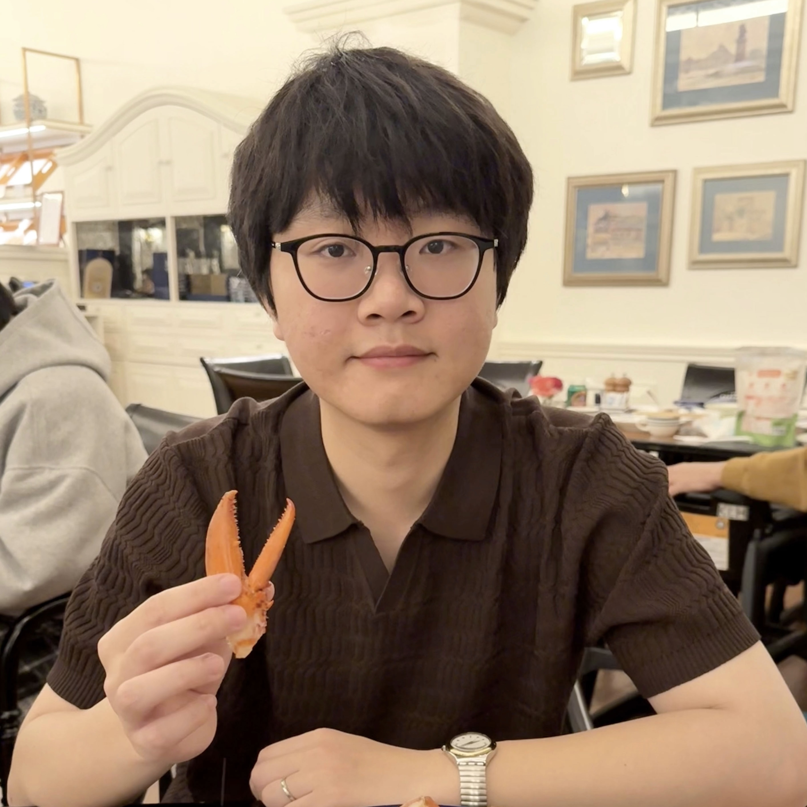
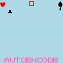
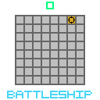
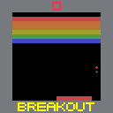
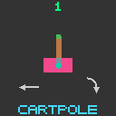
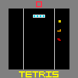
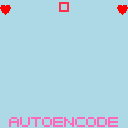
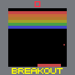
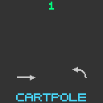

|
Zhe He
I am currently an AI Master's student at the
BOLT Lab within the
University of Macau.
Advised by Prof. Steven D. Morad,
my research centers on Deep Reinforcement Learning, specifically
addressing efficient RL, partial observability, world models, and robotics.
In Fall 2026, I will continue my journey at the University of Macau as a
Ph.D. student in Computer Science under the supervision of Prof. Morad.
I am always open to research discussions and industry connections. If you are interested in collaborating or sharing ideas, please feel free to reach out via email!
Email |
Scholar |
X |
Github
|

|
Updates
- Teaching Assistant: CISC7404 Decision Making, University of Macau.
- Teaching Assistant: CISC7026 Introduction to Deep Learning, University of Macau.
- Research Assistant: World Models, University of Macau.
- Research Assistant: Empathetic Dialogue Agents via Emotional LLMs, University of Macau.
- (8/2024) I started my Master's degree at the University of Macau with BOLT Lab .
|








|
Investigating Memory in RL with POPGym Arcade
Zekang Wang*, Zhe He*, Borong Zhang,
Edan Toledo, Steven Morad
* Equal Contribution
ICML 2026 (Spotlight)
|
|